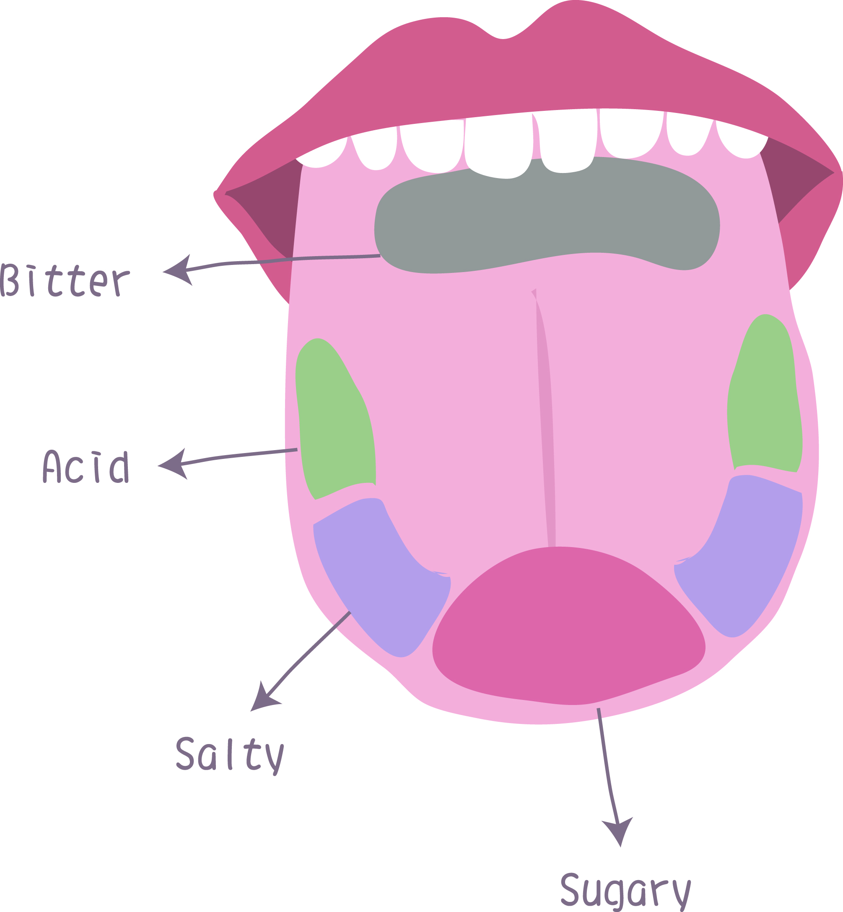

El gusto es uno de los 5 sentidos del ser humano. Es la capacidad de detectar sustancias a través de los receptores gustativos, el sentido corporal que permite la detección de sustancias químicas disueltas en la boca, procedentes generalmente de los alimentos.
El sentido del gusto depende de la estimulación de los botones gustativos, los cuales se encuentran en las papilas gustativas situadas en la lengua, órgano musculoso ubicado dentro de la boca o cavidad oral.1 El sabor se define como la sensación que causa un alimento u otra sustancia al introducirse en la boca. En el sabor influye el sentido del gusto, pero también el olfato y la textura.
Los sabores primarios conocidos con los que se identifica a los alimentos son dulce, salado, ácido y amargo, a los que desde principio de siglo se ha añadido el umami ("sabroso", en japonés). El gusto se percibe por el contacto de las sustancias químicas solubles con los quimiorreceptores situados principalmente en la lengua. El sentido del gusto puede considerarse una fuente de placer, pero su función consiste en permitir seleccionar aquellas sustancias más adecuadas para la nutrición y evitar en gran medida las que pueden representar un peligro para la vida por ser tóxicas o por encontrarse en estado de descomposición.